09. TD 두 점과 원 그리기
- 3d 공간에 두 점을 찍고, 두 점 사이를 지름으로 하는 원을 그린다.
- 두 점이 움직이면 큰 원도 같이 움직인다.
- 두 점은 손가락 끝으로 대체될 것이다.
두 점 그리기, 큰 원 그리기
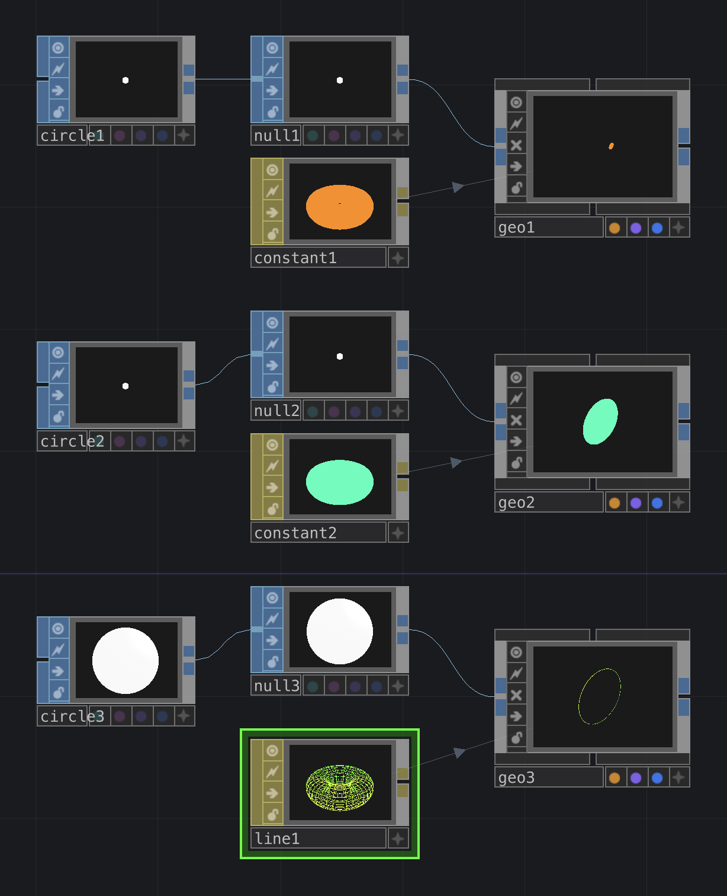
- 3차원 공간에 도형을 표현하는 것은 도형그리기와 공간에 위치하기로 구분하여 표현한다.
- SOP_Circle : 3차원 공간에 도형 그리기
- SOP_Null : 도형의 최종 출력 전 임시 저장소
- COMP_Geometry : 3차원 공간에 도형 배치하기
- MAT_Constant : 도형에 색깔을 반영하기, Geometry에 덮어쓰면 적용된다.
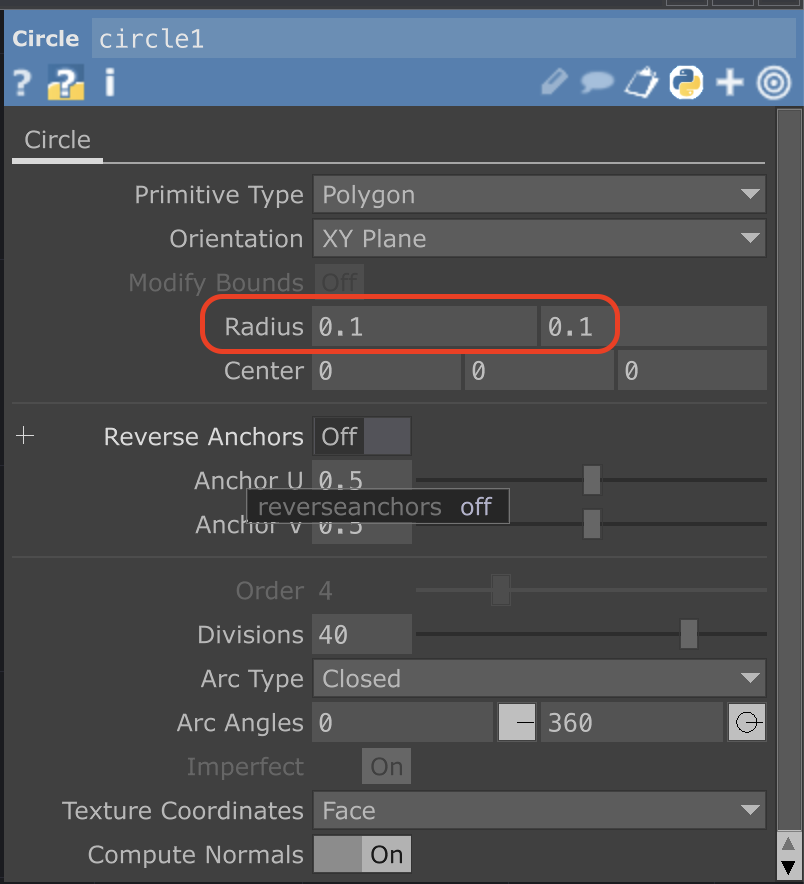
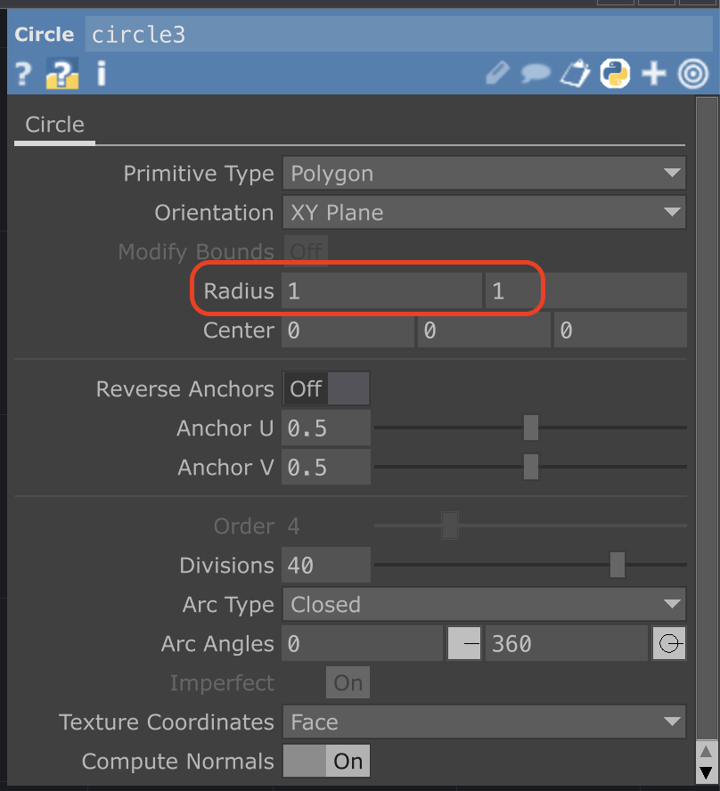
- Circle1, Circle2는 반지름을 0.1 로 세팅하고
- Circle3은 변경 없이 그대로 둔다. (기본값 1)
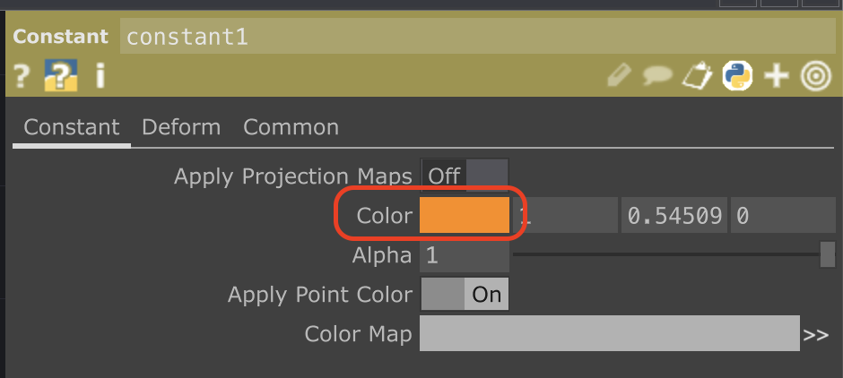
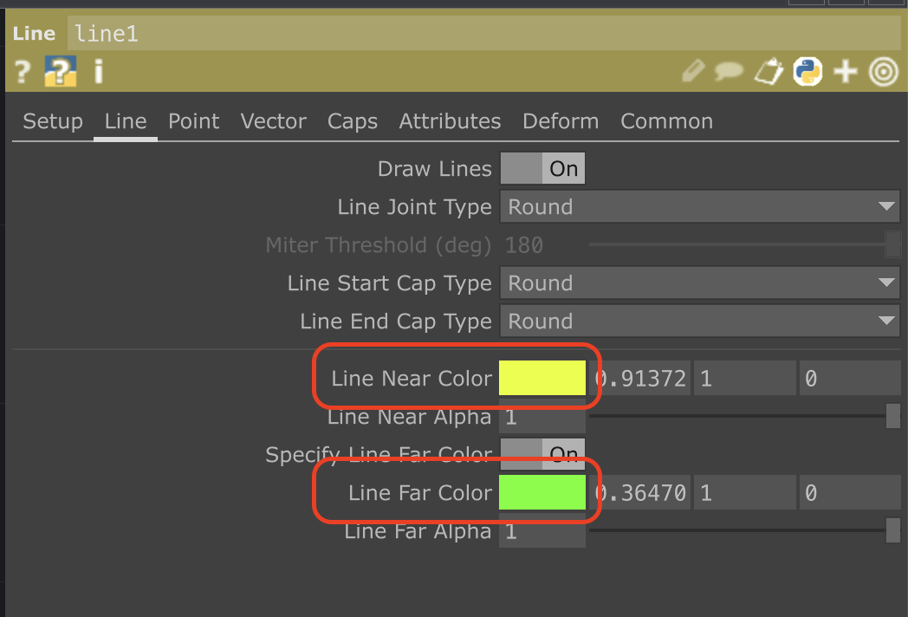
- 점 2개의 색깔은 MAT_Constant에서 Color 항목을 바꾸어 지정한다.
- 큰 원을 그리게 될 Circle3은 테두리만 있고 내부는 비워진 원을 그릴 것이다.
- MAT_Line을 사용하고 Line 탭에서 NearColor와 FarColor를 지정한다.
3d 공간을 화면에 나타내기
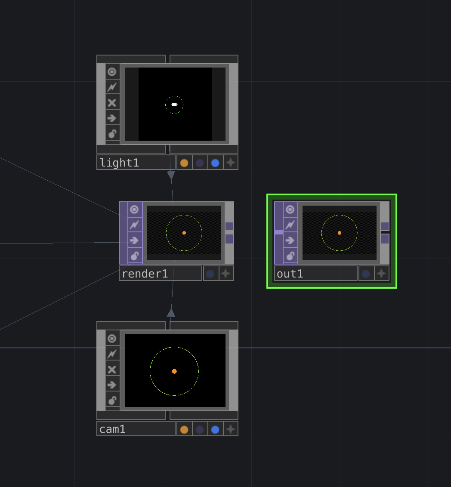
- 3d 공간에 있는 이미지(도형)들은 Geometry에 의해 위치값이 설정되어 있다.
- Geometry는 3d 공간에 있는데, 화면에 나타내는 것은 3d 공간처럼 보이는 2d 이미지다.
- 3d 공간을 2d 평면으로 바꾸는 것이 TOP_Render 이다.
- Render를 생성하면 여러 Geometry 들과 자동으로 연결된다.
- TOP_Render는 COMP_Camera, COMP_Light 와 함께 사용한다.
- Camera와 Light를 꺼내 놓으면 자동으로 연결된다.
- Render의 출력을 모니터나 프로젝터로 지정하기 위해 TOP_Out 을 연결한다.
- TOP_Out 오퍼레이터의 오른쪽 아래에 있는 파란색 점(디스플에이 스위치)를 누르면 TD 바탕에 Render에서 생성한 그림이 나타난다.
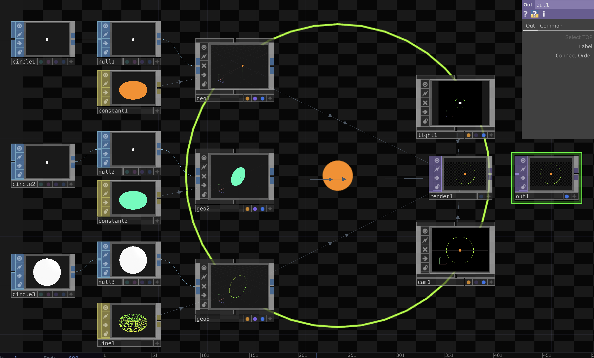
- 여기까지의 전체 모습
- 점 2개는 현재 같은 곳에 위치하기 때문에 겹쳐저 1개로 보인다.
큰 원의 좌표 계산
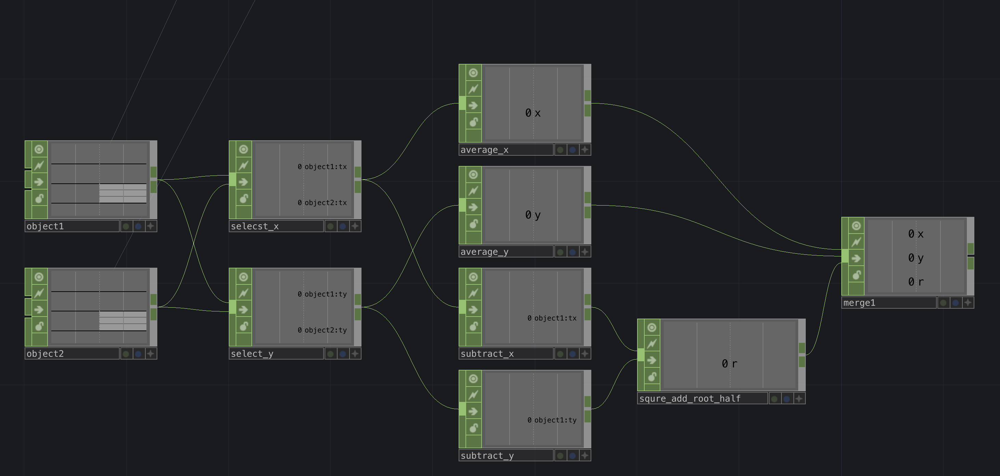
- 큰원의 좌표를 자동으로 계산하기 위한 세팅을 한다.
- 그림은 왼쪽 부터 CHOP_Object 2개, CHOP_Select 2개, CHOP_Math 5개, CHOP_Merge 1개 배치한 모습이다.
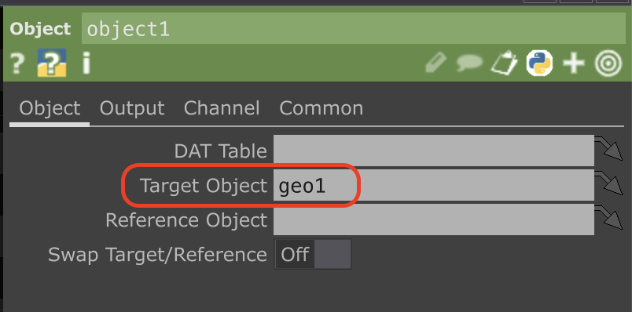
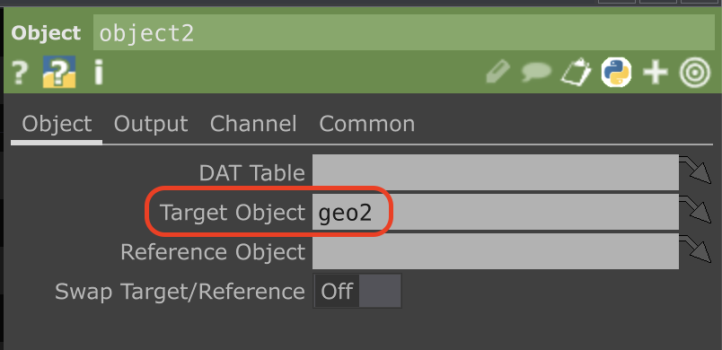
- Object의 Target Object에 점 2개의 Geometry를 넣는다.
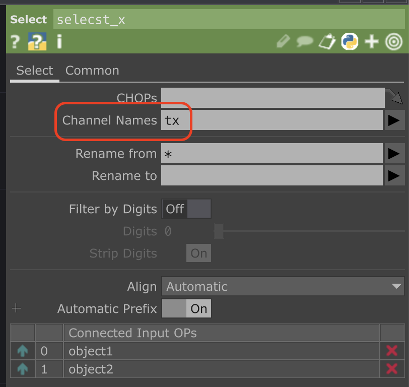
- Select는 select_x 와 select_y 로 이름을 바꾸었다.
- select_x 는 Channel Names 항목에서 tx 를 선택한다.
- select_y 는 Channel Names 항목에서 ty 를 선택한다.
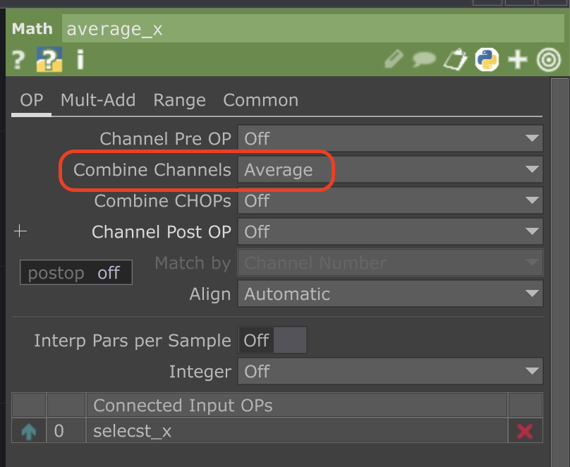
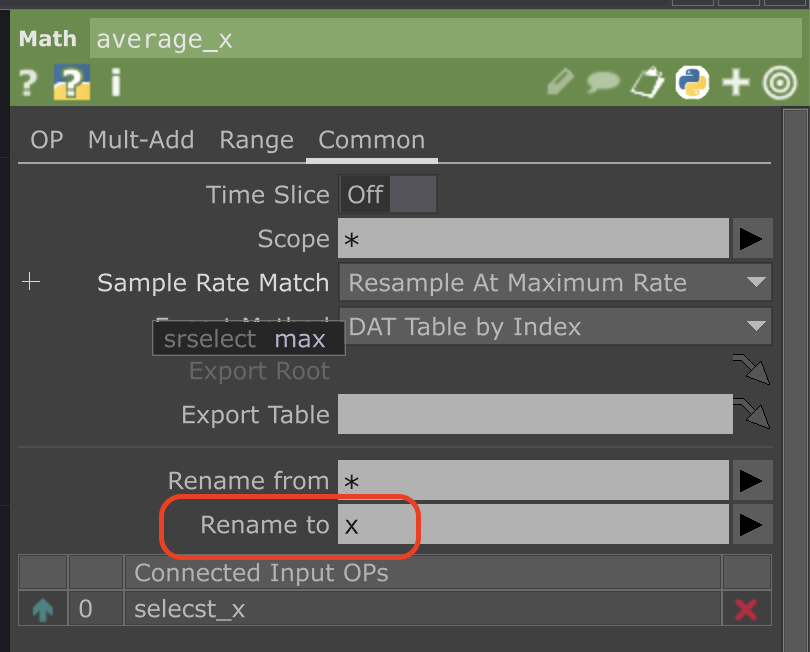
- 처음 2개의 Math는 각각 select_x와 select_y로 부터 입력 받는다. (선 연결)
- 이름을 average_x 와 average_y 로 바꾸었다.
- OP 탭의 Combine Channel 에서 Average 를 선택, 입력된 2 채널 값의 평균을 구한다.
- Common 탭에서 출력되는 값의 이름을 바꾼다. 그림에서는 x 라고 했다.
- select_y 의 Common 탭에서 이름 바꾸기는 y 로 한다.
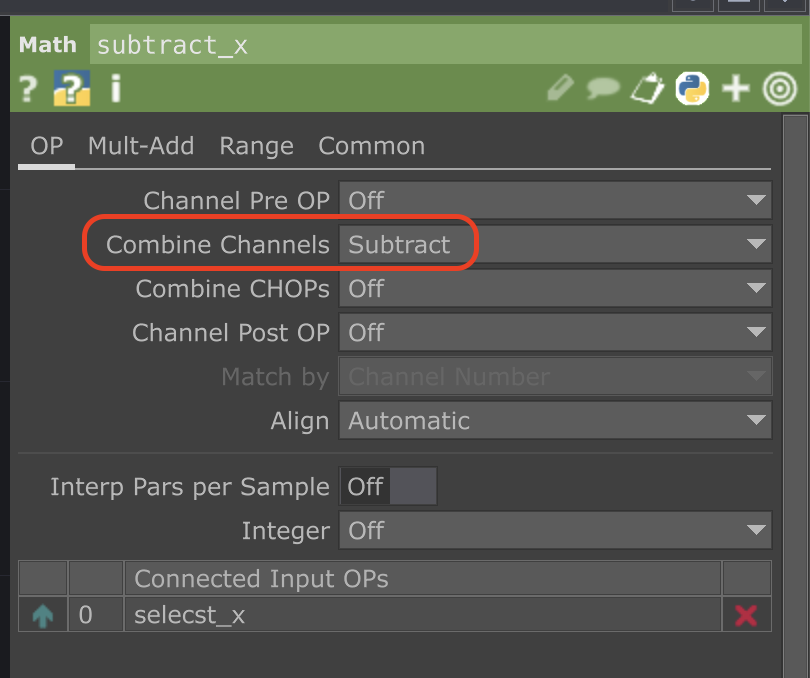
- 3번 4번 Math는 subtract_x와 subtract_y 로 이름을 바꾸었다.
- OP 탭에서 Comebine Channel에서 Subtract 선택한다.
- 입력된 두 값(두 점의 x 또는 y 좌표)의 차이를 계산한다.
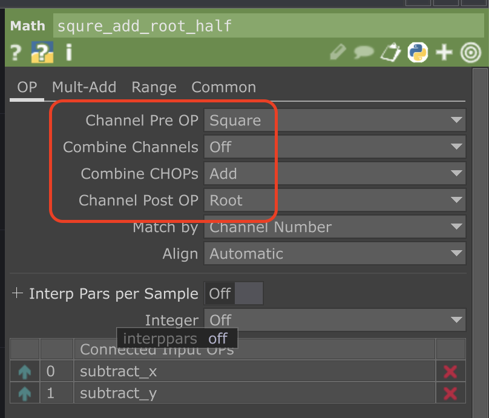
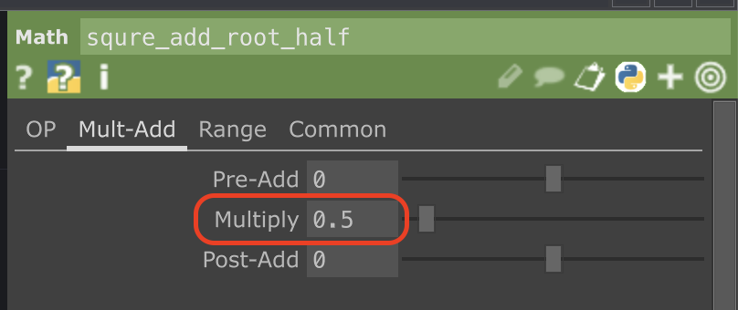
- 5번째 Math는 squre_add_root_half 라고 이름을 바꾸었다.
- 입력된 두 값(x 좌표 차이, y좌표 차이)을 각각 제곱하여 더하고, 더한 값에 루트를 씌운 값을 찾고
- 최종 값을 2로 나눈 결과를 출력한다.
- 이 계산은 두 점 사이의 거리를 계산하는 것이다.
- 피타고라스의 정리에 의한 빗변 길이 구하는 공식에 의한 것
- OP 탭 Channel Pre Op 항목은 Squre 선택, 계산 전에 각 채널 값을 각각 제곱한다.
- Combine CHOPs : 입력된 두 OP들을 합치는 방법은 'Add'
- Channel Post Op : 합쳐진 결과에 추가로 처리할 내용은 'Root', 제곱을 폴어 낸다.
- 여기까지 나온 결과가 두 점 사이의 거리가 된다.
- Mult-Add 텝에서 Multi-Add에 0.5 를 세팅한다.
- 계산 결과에 'x0.5' 를 적용한다. 두 점 사이의 거리를 반으로 줄인다. 반지름이 된다.
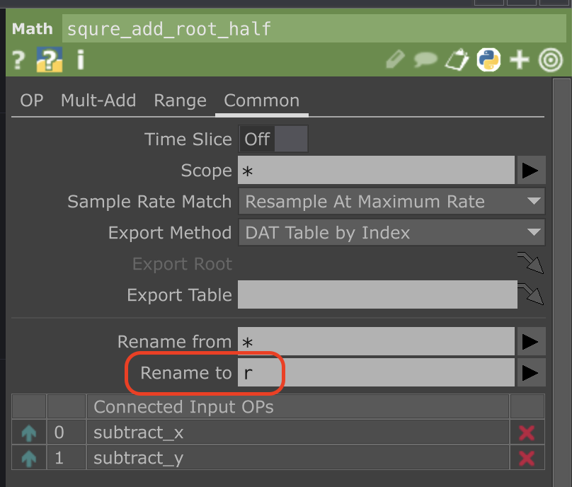
- Common 탭에서 이름을 r 로 바꾼다. (반지름 : radius)
- 여기까지 계산된 결과를 CHOP_merge에 넣는다.
- Merge는 3가지 값 (x, y, r)을 한꺼번에 가지고 있다.
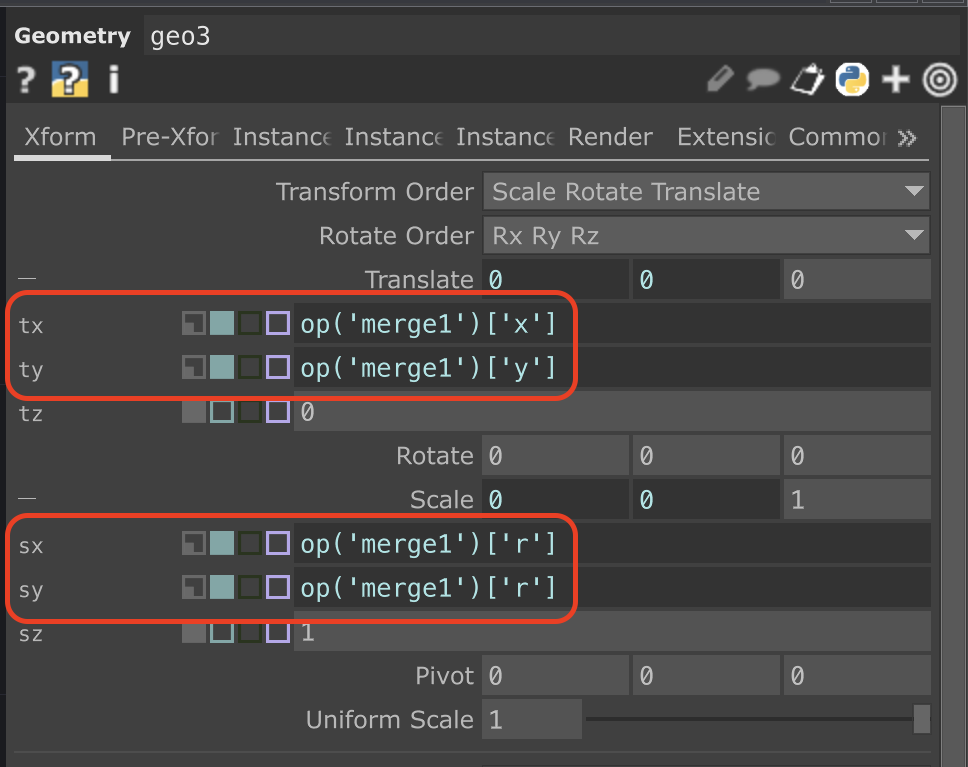
- Merge 값을 3번째 원(circle3)의 Geometry(geo3)에 적용한다.
- Translate xy 값에 x, y를 넣고, Scale xy에 반지름 r 값을 넣는다.
점과 원의 좌표 이동
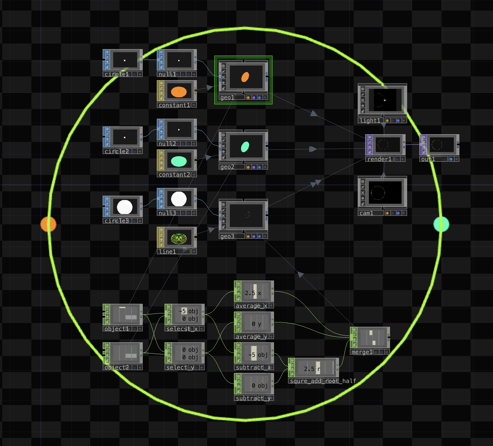
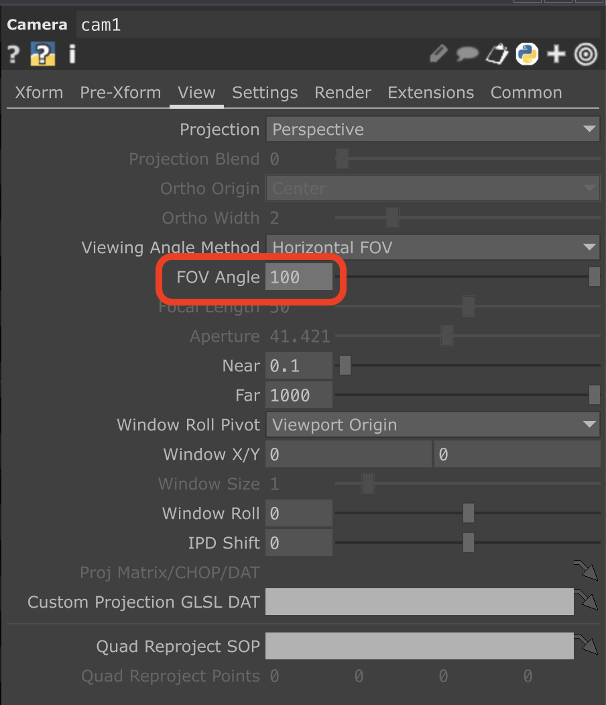
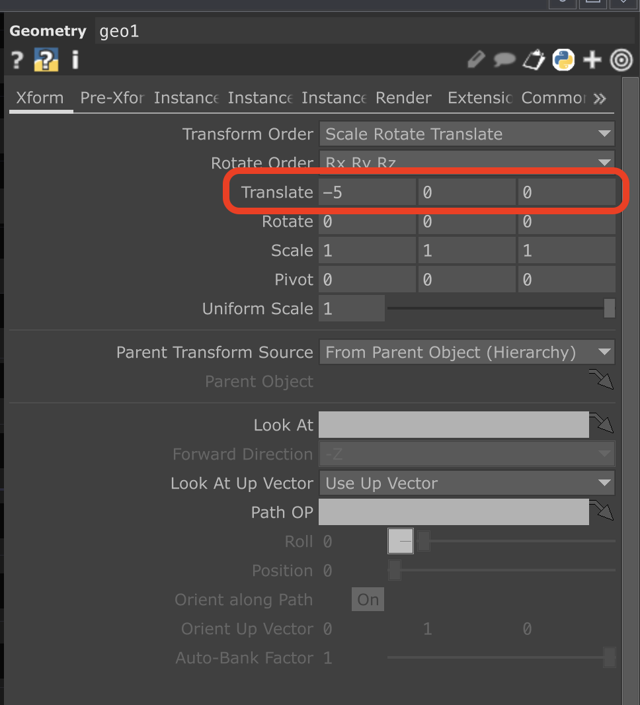
- COMP_Camera의 View 탭에서 FOV Angle을 100으로 세팅한다. (카메라 넓게 보기)
- 두 점의 좌표(geo1, geo2)를 수정하면, 점 위치에 따라 큰 원이 따라 다니게 된다.
- 첫 번째 점(circle1)을 이동하기 위해 geo1의 Translate 값을 수정했다.
- 미디어 파이프를 사용해 엄지와 검지 손가락 끝 지점의 좌표를 두 점에 적용할 것이다.